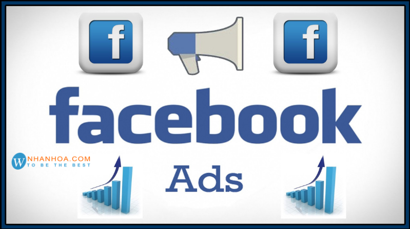

Chi phí quảng cáo Facebook
 Lê Thị Phương Lan
Lê Thị Phương Lan
 29/06/2021,01:59 pm
29/06/2021,01:59 pm
 357
357Nếu bạn đang có ý định đầu tư để chạy quảng cáo Facebook để đẩy mạnh kinh doanh. Tuy nhiên, bạn vẫn đang lo lắng và chưa biết về chi phí quảng cáo Facebook là bao nhiêu, có tốn nhiều tiền của bạn không? Bài viết này sẽ cung cấp thêm một vài thông tin về chi phí quảng cáo Facebook để bạn dễ dàng cập nhật.
- Quảng cáo Facebook là gì?
- Dấu hiệu nhận biết quảng cáo trên Facebook
-
Các loại giá chạy quảng cáo Facebook
- Cost-per-Click (CPC)
- Cost-per-Mile (CPM)
- Cost-per-View (CPV)
- Cost-per-Action (CPA)
- Cost-per-Like (CPL)
-
Các yếu tố ảnh hướng đén giá chạy quảng cáo Facebook
- Audinence - Đối tượng
- Bid - Đấu thầu
- Facebook Ad Objectives - Mục tiêu quảng cáo Facebook
- Competition - Đối thủ cạnh tranh
- Facebook Ad Placements - Vị trí quảng cáo trên Facebook
- Ad Quality - Chất lượng quảng cáo
- Kết luận
1. Quảng cáo Facebook là gì
Facebook Ads được viết tắt bởi cụm từ Facebook Advertising, là phương thức quảng cáo sử dụng phương tiện Facebook. Quảng cáo này sẽ được hiển thị và phân phối một cách tự động tùy vào đặc điểm cá nhân của người dùng như nhân khẩu học, vị trí địa lý, sở thích… Quảng cáo được hiển thị trên Facebook sẽ bao gồm những chương trình khuyến mãi, ưu đãi, những chương trình giới thiệu sản phẩm mới hướng đến những khách hàng tiềm năng trên mạng xã hội này và các mạng xã hội khác liên kết với Facebook.
Facebook Ads là một dịch vụ quảng cáo; vậy nên khi muốn hình ảnh, video, fanpage của mình xuất hiện trên Facebook, doanh nghiệp hay các cá nhân cần trả một khoản phí. Và quảng cáo sẽ được xuất hiện ở những vị trí đã được quy định trên Facebook.
Quảng cáo Facebook là gì?
Khoản phí mà doanh nghiệp trả cho Facebook sẽ được tính như thế nào? Mỗi lượt click vào quảng cáo, vào website, lượt thích trang, lượt tương tác trong các bài viết đều sẽ được Facebook tính phí. Tùy vào mức giá mà doanh nghiệp thầu cho quảng cáo của mình, giá thầu càng cao thì khả năng xuất hiện của quảng cáo đó càng lớn.
>>> Xem thêm: [BÍ QUYẾT] tăng like Facebook hiệu quả dành cho mọi đối tượng
2. Dấu hiệu nhận biết quảng cáo Facebook
Mỗi ngày khi lướt Facebook, chúng ta cập nhật một lượng lớn thông tin mới và hầu hết là những thông tin chúng ta quan tâm và có nhu cầu tìm kiếm. Vì thế mà Facebook có lượng dữ liệu khổng lồ từ người dùng của họ, những thông tin được lấy một cách tự nguyện từ giới tính, độ tuổi đến sở thích, vị trí địa lý.
Facebook hiểu rất rõ về khách hàng của mình để chia ra các nhóm khách hàng mục tiêu khác nhau theo những lĩnh vực hay mục đích khác nhau. Ví dụ đơn giản nhất mà chúng ta luôn bắt gặp mỗi ngày chính là việc khi chúng ta tìm kiếm về một sản phẩm nào đó trên Facebook, thì ngay sau đó trên Facebook sẽ liên tục xuất hiện thêm về sản phẩm đó hoặc những sản phẩm liên quan. Không những thế, vì Facebook liên kết với Instagram, nên khi bạn sử dụng ứng dụng này cũng sẽ thấy những quảng cáo liên quan đến sản phẩm mà bạn đã tìm trên Facebook.
Dấu hiệu nhận biết quảng cáo trên Facebook
Những bài đăng có chữ “Được tài trợ” hay “Sponsored” hiển nhiên sẽ là những quảng cáo mà các doanh nghiệp đang trả phí cho Facebook để có thể xuất hiện trên tường nhà bạn.